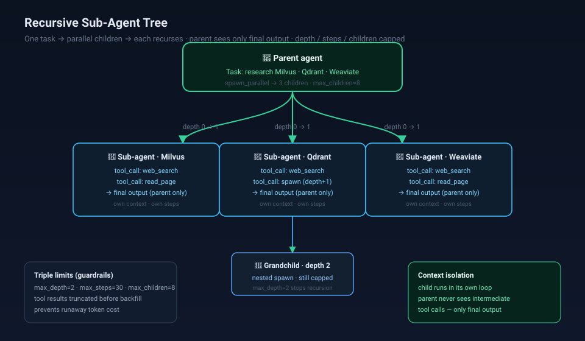
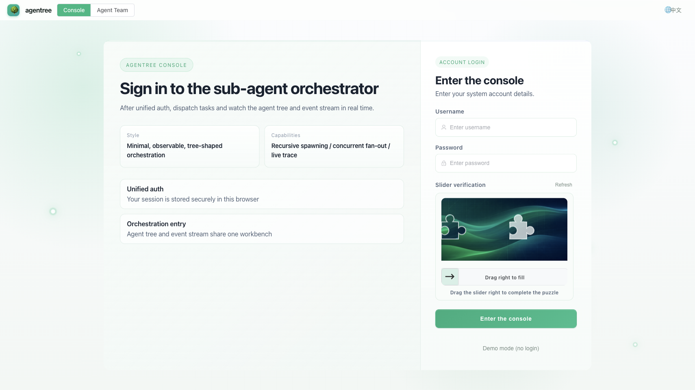
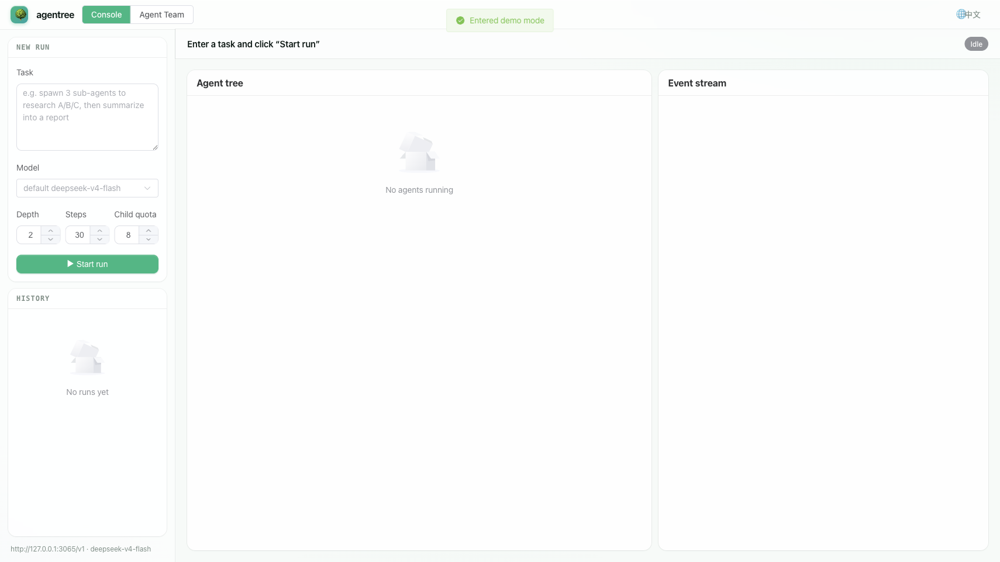

Give an agent a task and it can recursively spawn sub-agents to tackle parts of it. Each sub-agent runs in its own context — the parent only sees the final output. A persistent team system mirrors how real agent teams collaborate: teammates, an inbox, a shared task board with dependencies.
Single-agent loops stall on long, parallelizable work. Agentree lets an agent decompose a task and
fan out to sub-agents, each running the same Agent loop with its own tools, steps, and context.
Three guardrails — max_depth, max_steps, max_children — cap runaway
recursion and token cost.

A parent task fans out to parallel children; a child can itself spawn grandchildren (depth 2), still bounded by the same limits. Tool results are truncated before backfill so a single runaway call can't blow the parent's context.
The web dashboard (Vue 3 + Element Plus) shows the live agent tree as runs progress, plus a real-time event stream.


Run an agent to a final answer. With spawn tools available, children recurse through this same function.
A persistent team: await team.run("task"). Lead coordinates teammates via a shared task board.
Register a custom tool. Tool descriptions are model-facing — you control what the agent can do.
max_depth=2 · max_steps=30 · max_children=8 · enable_web=True.
Drive agents over HTTP — no extra code to wire up.
| Method | Path | Purpose |
|---|---|---|
| POST | /api/runs | Start a single-agent run |
| POST | /api/team/runs | Start a team run |
| GET | /api/runs | List runs |
| GET | /api/runs/{id} | Run detail |
| PATCH | /api/runs/{id} | Rename a run |
| DELETE | /api/runs/{id} | Delete a run |
| POST | /api/runs/{id}/cancel | Cancel a running agent |
| GET | /api/runs/{id}/events | Live event stream (SSE) |
| POST | /api/auth/login | Login |
| GET | /api/auth/status | Auth / demo-mode status |
Zero-cost, runs locally. Any OpenAI-compatible gateway works.
# deps
pip install fastapi uvicorn numpy scikit-learn
# point at your LLM gateway
export AGENTREE_API_KEY=sk-...
export AGENTREE_BASE_URL=http://127.0.0.1:3065/v1
export AGENTREE_MODEL=deepseek-v4-flash
export AGENTREE_DEMO_AUTH=on
# web server (dashboard on http://127.0.0.1:8767)
python3 -m agentree.server --port 8767
# or the CLI
python3 -m agentree.cli "summarize this doc"
# tests — 28 passing
python3 -m pytest tests/ -q -p no:asyncio
# or ship it as a container (multi-stage: builds the Vue frontend, serves via uvicorn)
docker build -t agentree .
docker run -p 8767:8767 agentree
# → http://127.0.0.1:8767 (demo mode on by default)Deployment-verified: the Dockerfile above was built and run end-to-end (image 181MB, frontend compiled in-container, API serving, demo login returning tokens). It's a real deployable, not a README claim.
| Trade-off | Why |
|---|---|
| Recursion over frameworks | One Agent loop, reused at every depth — no combinatorial explosion of code paths. |
| Context isolation per child | Parent stays lean; a child's tool noise never leaks into the orchestrator. |
| Truncate tool results | Bounds tokens on the hot path — the #1 cost/latency killer in agent loops. |
| Team mirrors real teams | Persistent teammates + shared task board = the pattern production agent teams already use. |
| Zero-cost default | Runs on a local gateway; no cloud bill to demo. |